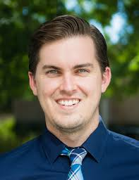
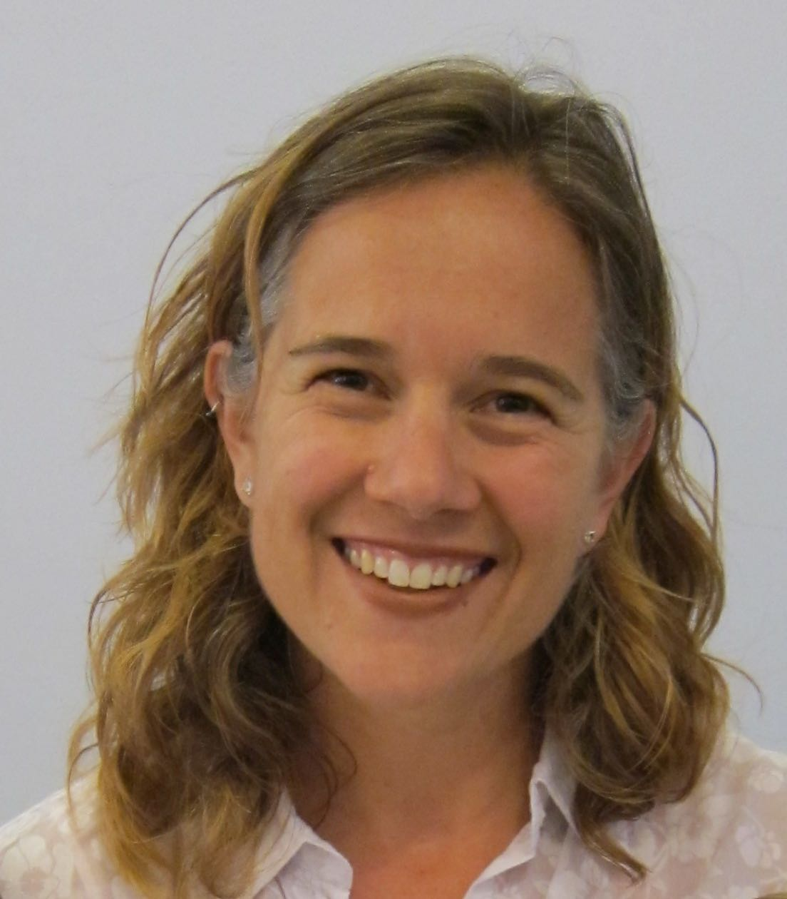
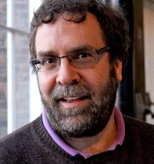

Last summer we wrote a series of blog entries designed to start converstations around teaching data science, Teach Data Science. We covered topics such as data science software, data ingestation, data technologies, data wrangling, visualization & exploration, communication, and key reports and findings on data science.
One key element that was lacking on our 2019 blog was a discussion about and a commitment to teaching the ethical aspects of data science. We have now found ourselves in the summer of 2020, overwhelmed by the state of the world and re-committed to the ethical challenges which can help data science be a positive force for change.
Although none of us are experts in ethics, we have all included ethics discussions in our classrooms for many years. In the weeks to come, we will share some of the ways we engage our students in these important topics. We will provide resources for readings, examples, datasets, and exercises. We believe that data ethics are part of every data science analysis and classroom experience, and we hope that this summer’s blog will entice you into presenting ethical dilemmas and related conversations to your students early and often.
During summer 2020, we plan to write a dozen blog entries starting on Monday, July 6th. We hope that you bookmark the site and check in regularly. Want a reminder? Sign up for emails at https://groups.google.com/forum/#!forum/teach-data-science (you must be logged into Google to sign up).
We plan to cover many themes related to teaching data science ethics:
as well as providing case studies for teaching data science ethics.
We welcome suggestions for topics. Also, please leave comments on the blog to continue the conversation and share your approaches to incorporating the ethics of data science into the classroom.

Hunter Glanz (twitter) is an Associate Professor of Statistics and Data Science at California Polytechnic State University (Cal Poly, San Luis Obispo). He received a BS in Mathematics and a BS in Statistics from Cal Poly, San Luis Obispo followed by an MA and PhD in Statistics from Boston University. He maintains a passion for machine learning and statistical computing, and enjoys advancing education efforts in these areas. In particular, Cal Poly’s courses in R, SAS, and Python give him the opportunity to connect students with exciting data science topics amidst a firm grounding in communication of statistical ideas. Hunter serves on numerous committees and organizations dedicated to delivering cutting edge statistical and data science content to students and professionals alike. In particular, the ASA’s DataFest event at UCLA has been an extremely rewarding experience for the teams of Cal Poly students Hunter has had the pleasure of advising.

Jo Hardin (twitter) is a statistician at Pomona College who is passionate about statistics and data science education for all. She received her BA from Pomona College and her MS and PhD degrees from the University of California, Davis. Two years of working at the Fred Hutchinson Cancer Research Center in Seattle, WA got her hooked into analyzing high throughput data (e.g., simultaneous gene expression of thousands of genes). Much of her theoretical work has focused on computational approaches to statistical problems in genetics. Jo works hard to provide her students with current best practices, including teaching the tidyverse to her students in Introduction to Statistics. Beyond the classroom, she has also worked to engage students in statistics and data science: she has worked on the ASA’s curriculum guidelines task force, sent groups of students to UCLA’s DataFest competition, and hosted a local StatFest conference. Through her endeavors, she is working to help undergraduates learn about analyzing data in the wild and gain the skills to be effective and ethical when tasked with making claims from data. She has taught statistics inside the California Rehabilitation Center through the international Inside-Out Prison Exchange Program.

Nick Horton (twitter) is Beitzel Professor of Technology and Society and Professor of Statistics and Data Science at Amherst College. His recent work has focused on statistics and data science education. Nick is a fellow of the American Statistical Association and the American Association for the Advancement of Science. He chaired the Committee of Presidents of Statistical Societies and the ASA Curriculum Guidelines for Undergraduate Programs in Statistical Science workgroup. Nick serves as co-chair of the National Academies Committee for Applied and Theoretical Statistics, is a co-author of the 2018 “Undergraduate Data Science: Opportunities and Options” consensus study report, and co-author of the ASA’s revised GAISE (Guidelines for Assessment and Instruction in Statistics Education) College report.